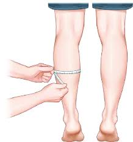
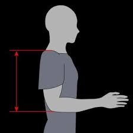
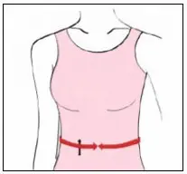

Weight Estimation in Bedridden Patients
Accurate weight estimation is crucial for medication dosing, nutritional assessment, and treatment planning in immobile patients. These validated anthropometric methods use body measurements to estimate weight when direct measurement isn't possible.
Weight Estimation Formulas Explained
Estimating weight in bedridden patients is crucial for accurate medication dosing and nutritional planning. Several validated formulas are used based on body measurements. Here's a quick overview:
- Chumlea et al.: Designed for elderly or immobile patients, this formula uses knee height and mid-arm circumference (MAC). It's gender-specific and widely used in geriatric settings due to its reliability.
- Rabito et al. (Full Model): A comprehensive regression model incorporating age, sex, MAC, calf circumference, and interaction variables. Offers high accuracy in clinical environments but requires multiple inputs.
- Rabito et al. (Simplified): A streamlined version of the full model. It only uses MAC and calf circumference, making it ideal for bedside use or in resource-limited settings.
- Rabito et al. (Sex-adjusted): Adjusts estimates based on patient sex using simplified variables. Useful when sex differences significantly impact body composition.
- Ross Laboratories: Originally developed for pediatric and clinical trial purposes, this formula uses MAC and subscapular skinfold thickness but can be adapted for adults. It’s less commonly used but still referenced.
Note: All formulas are estimation tools and should be used along with clinical judgment.
Measurement Guide for Bedridden Patients
Semi-span (Demi-span)
Measure from the middle of the sternal notch to the tip of the middle finger. Keep the arm in line with the shoulder.

Forearm Length
Measure from the tip of the elbow to the midpoint of the wrist bone. The forearm should be straight.

Recumbent Height
Measure the distance from the top of the head to the heel with the patient lying flat using a special measuring scale.

Knee Height
Use a sliding caliper from under the heel to the top of the thigh while the patient is lying or sitting.

Calf Circumference
Measure the widest part of the calf on the non-dominant leg. Ensure the leg is relaxed.
Arm Circumference
Measure halfway between the shoulder and the elbow. This is the midpoint of the upper arm.

Subscapular Skinfold
Use calipers to measure a diagonal skinfold just below the bottom angle of the shoulder blade.

Arm Length
Measure from the upper edge of the acromion process to the midpoint of the elbow, from the back side of the patient.
Abdominal Circumference
Measure around the abdomen at the midpoint between the last rib and the top of the hip bone. Ensure relaxed posture.
Importance of Accurate Weight Estimation
- Medication Dosing: Most drug dosages are calculated per kg of body weight. Underdosing or overdosing can lead to ineffective or harmful treatment.
- Nutritional Assessment: Helps evaluate malnutrition, obesity, or cachexia—crucial for creating effective diet plans and feeding regimens.
- Fluid Balance: Weight changes help track fluid retention or loss in critical patients, especially in nephrology and cardiology cases.
- Dialysis Dosing: Estimating dry weight is vital for adjusting dialysis sessions and preventing complications like hypotension.
- Anesthesia Safety: Weight determines anesthetic dosage and prevents overdose risks during surgical procedures in immobile patients.
Tips for Better Weight Estimation
- Always take multiple limb circumference measurements and average them if possible.
- Use consistent technique, tape tension, and anatomical landmarks for reliable data.
- Document limb asymmetries (e.g., amputations, edema) and adjust estimation accordingly.
- Cross-check estimation with BMI and clinical observation when in doubt.
Limitations to Keep in Mind
- Formulas may overestimate in obese patients or underestimate in those with muscle atrophy.
- Presence of edema, ascites, or contractures may distort actual mass.
- Always interpret results in conjunction with clinical judgment and visual assessment.